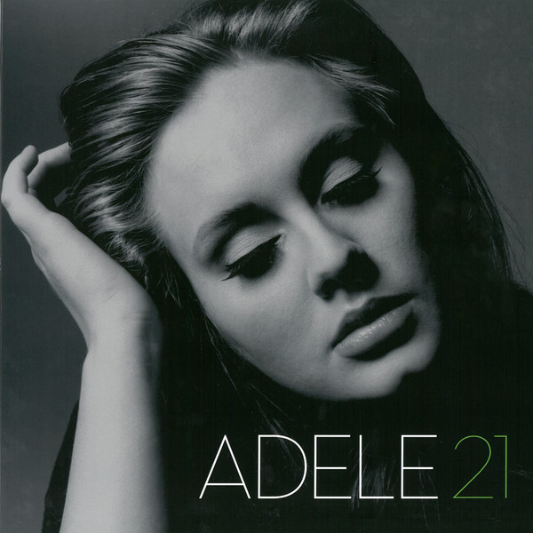

Background Infomation
Adele is an English pop singer, and songwriter with a soulful twist. Adele Laurie Blue Adkins was born on May 5th, 1988, in Tottenham London, England to a young blue collar mother. As a child she enjoyed singing pop music and learned to play both the guitar and clarinet. But her taste in music changed in early teenage years when she first listen to Etta James and other Soul artist. Her stardom would begain when her friend started to post songs Adele had written to Myspace. By 2006 her music stared gain the attention of record lables till she signed a contract with XL Recordings. This deal would then lead to her first album called 19 in 2008. This also refers to her age when she first wrote most of her songs.
